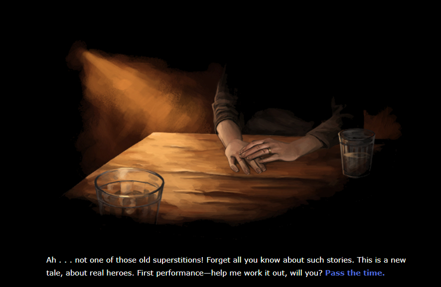
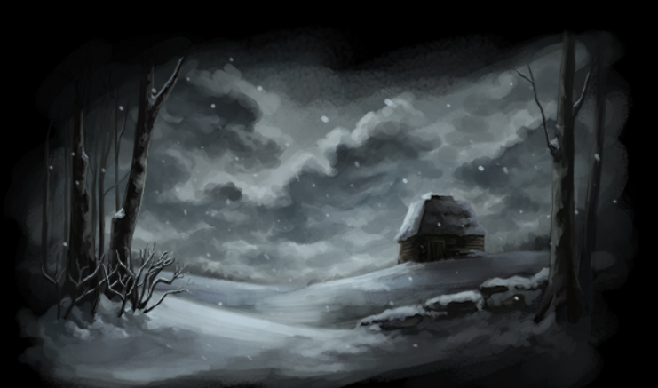

The Domovoi was developed by Kevin Snow, based off of a Slavic myth of
the same name. It draws primarily from Russian history, culture, and folklore. The
player advises The Storyteller on how their tale of the Domovoi should
progress and eventually end. You can download the game here.
The Domovoi was made with the Twine engine, and as such, runs completely in-browser. It functions
essentially as a visual novel. The player clicks an embedded option to select it.
Canonically, these selections are the player character's recommendations to the
Storyteller on what should happen next in the story of the Domovoi they are
workshopping for a crowd. Typically, these actions have to do with the actions the
Domovoi itself does. Depending on your selection, you will unlock different elements
of the story. The game is not entirely nonlinear, though, as there are story beats
that play out no matter what you select. Furthermore, for the vast majority of
endings, the outcome and fate of the Domovoi remain the same. See the story analysis section of this page for more details.
Where The Domovoi shines is in its replayability and its
character work displayed in regards to the player character. While a player is
unlikely to change the story, the writing is compelling enough where there is
incentive to try out all of the options available. Furthermore, you can complete the
game in a few minutes, depending on how fast of a reader you are. The "gameplay
loop" is thus replaying over and over again. Despite how repetitive it sounds, this
is a rewarding endeavor.
Aesthetics
Opening
illustration.
Visuals
All of the art in this game are digital illustrations by Patrick
Bonaduce. They're painterly in nature, calling to mind oil paintings with their use
of somewhat blobby swaths of color and emphasis on scenery. One of the most striking
things to me is how many empty scenery shots this game employs. It is supremely
effective at setting the stage: a dark, lonely, winter day, with a small cast of
characters within a cabin. The outside is in cool colors. The indoors are warm, except when the Domovoi is in danger. These illustrations do a great job of allowing the player
to feel the cold, lonely themes of the story visually.
Landscape
shot.
Audio
Interestingly, the soundtrack of The Domovoi is incredibly
minimal. There isn't a backing track to gameplay. Instead, ambient wind noise
permeates the majority of outdoor shots, and perhaps the soft crackling of fire when
the oven is on screen. At other times the player is in complete silence.
Contextually sensical ambient noise is the M.O. of this game. The only times this is
defied is when there is a sound effect going along with an action, such as a
particularly startling gunshot when the Domovoi meets its demise in several of the
endings. This only contributes to the ambience that is so central to this story. The
player is forced to really pay attention to the words they are reading. While on the
surface it isn't much to write home about, the sound design here suits The
Domovoi perfectly.
Story Analysis
In a game where choices matter, the most logical course of action for
analysis is to look at said options. I replayed the game a few times, choosing as
many different options as I could at different points, and tried to figure out what
each word you clicked resulted in. The majority of decisions made involve clicking
on some sort of symbolic item. They are thus represented on this Kumu graph as
objects. Notably, there are also a few concepts you choose to value at different
points, namely Religion vs. Tradition. These are also represented.
It is worth noting that the game takes place almost across two
"worlds". The player character and the storyteller are "real", so to speak, while
everything else is a part of a story told by the character I've dubbed the Storyteller.
For the purposes of this graph, it is the Player (as a character) who makes many
central decisions and is connected to several of them. However, when the selection
the Player makes is an action done by the Domovoi, it is connected to the Domovoi
itself. In a way, the player never directly controls the Domovoi, but the Player
does. I feel this is an important distinction to make.
I have also marked items that are selectable but only as ways to move
to the next slide. These include the wicker broom and the cigarette. These do not
have any actions associated with them other than how another non-controllable
character interacts with them. They are connected to these respective
characters. This does hav the consequence of lading to some looping, such as with the Soldier and his cigarette.
As stated before, most endings wind up with the Domovoi meeting its
demise in some form. It, any other deceased characters, and the instruments of death
are connected to Death as a concept. Objects are related to their outcome of use.
Characters are related to the outcome they meet. For these reasons, mapped items are
sized by their indegree, so we can see which outcomes, characters, and items are
most prevalent, giving us insight into central themes. Predictably, the titular
character is the largest, but this is moreso because of what happens with him rather
than arbitrarily by name alone.